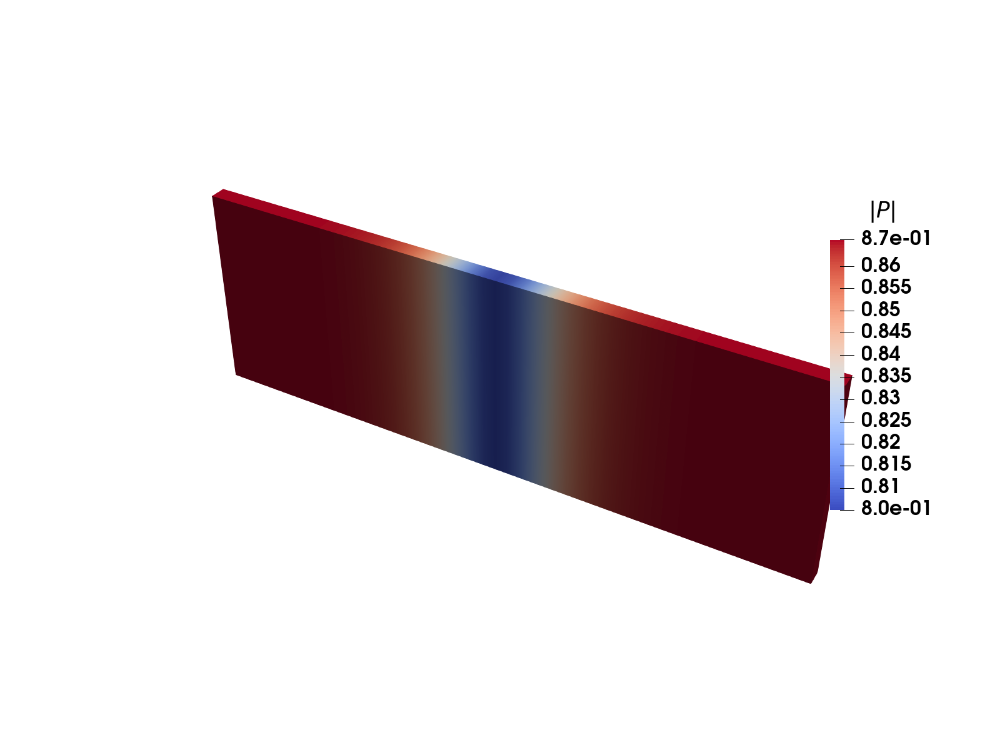

HyperHessians.jl
Forward-mode AD specialized for second-order derivatives
Automatic Differentiation
- What is Automatic Differentiation (AD)?
- Obtain numerically "exact" derivatives of "subroutines" without having to implement them manually.
- Saves time and avoids bugs.
- Not symbolic differentiation, not expression building
- Reverse vs forward mode differentiation
- This talk: forward mode
- (We do not talk about reverse mode here...)
Finite differences
$$ f(x_0 + h) = f(x_0) + h\,f'(x_0) + \tfrac{h^2}{2}\,f''(x_0) + \cdots $$ $$ f'(x_0) = \frac{f(x_0+h) - f(x_0)}{h} + \mathcal{O}(h) $$
- Big $h$: the dropped Taylor terms dominate.
- Small $h$: the subtraction cancels in floating point.
- Have to call
ftwice
f(x) = x sin(x²) at x = 2, error vs exact f′
julia> f(x) = x * sin(x * x); julia> fd(f, x, h) = (f(x + h) - f(x)) / h; julia> exact = sin(4.0) + 8cos(4.0); julia> fd(f, 2.0, 1e-2) - exact0.08441453688334022 # truncation julia> fd(f, 2.0, 1e-14) - exact-0.14247963371404015 # cancellationDual numbers
Definition and operators
- Complex numbers: $z = a + bi, \quad i^2=-1, \quad \operatorname{Im} [z] = b$
- Dual numbers: $d = x + h\varepsilon, \quad \varepsilon^2 = 0, \quad \varepsilon[d] = h$
$$ f(d) = f(x + h\,\varepsilon) = f(x) + h f'(x)\,\varepsilon + \underbrace{\tfrac{h^2}{2} f''(x)\,\varepsilon^2 + \cdots}_{=\ 0\ \textbf{exactly}} $$ $$ f'(x) = \varepsilon[f(x + h\,\varepsilon)] / h $$
- Primitives need one rule each: $\ \sin(d) = \sin(x) + h\cos(x)\,\varepsilon$.
- $d_1 d_2 = x_1 x_2 + (x_1 h_2 + x_2 h_1)\,\varepsilon$: the product rule falls out ($h_1 h_2\,\varepsilon^2 = 0$).
- Seed $h = 1$, read the derivative off the $\varepsilon$ slot: $f'(x) = \varepsilon[ f(x + \varepsilon) ]$.
Dual numbers
Implementation
struct Dual x::Float64 # value ε::Float64 # epsilon coefficientendBase.:+(a::Dual, b::Dual) = Dual(a.x + b.x, a.ε + b.ε)Base.:*(a::Dual, b::Dual) = Dual(a.x * b.x, a.x * b.ε + b.x * a.ε) # product ruleBase.sin(d::Dual) = Dual(sin(d.x), cos(d.x) * d.ε) # chain rulederivative(f, x) = f(Dual(x, 1.0)).ε # seed ε = 1, run f, read εjulia> f(x) = x * sin(x * x); julia> derivative(f, 2.0)-5.985951462216824 julia> sin(4) + 8cos(4)-5.985951462216824julia> @code_warntype optimize=true derivative(f, 2.0)... x::Float64Body::Float641 ─ %1 = intrinsic Base.mul_float(x, x)::Float64│ %2 = intrinsic Base.mul_float(x, 1.0)::Float64│ %3 = intrinsic Base.mul_float(x, 1.0)::Float64│ %4 = intrinsic Base.add_float(%2, %3)::Float64│ %5 = invoke Main.sin(%1::Float64)::Float64│ %6 = invoke Main.cos(%1::Float64)::Float64...- Data layout: where value $\varepsilon$ coefficient
Dual numbers
Higher order derivatives
derivativeis just Julia code, we know how to differentiate that!second_derivative(f, x) = derivative(y -> derivative(f, y), x)- Nested
Dualnumbers
struct Dual x::Float64 ε::Float64endderivative(f, x) = f(Dual(x, 1.0)).ε struct Dual{T} x::T ε::Tendderivative(f, x) = f(Dual(x, one(x))).εBase.one(d::Dual) = Dual(one(d.x), zero(d.x))Base.cos(d::Dual) = Dual(cos(d.x), -sin(d.x) * d.ε)julia> second_derivative(f, x) = derivative(y -> derivative(f, y), x); julia> second_derivative(f, 2.0)16.37395639949036 julia> 12cos(4) - 32sin(4)16.37395639949036- Data layout: $(f,\, f')$ $(f',\, f'')$
Dual numbers
Jacobians: $f\colon \mathbb{R}^n \to \mathbb{R}^m$
$$ f(\mathbf{x} + \mathbf{h}\,\varepsilon) = f(\mathbf{x}) + J(\mathbf{x})\,\mathbf{h}\,\varepsilon, \qquad \mathbf{x},\, \mathbf{h} \in \mathbb{R}^n, \quad f(\mathbf{x}) \in \mathbb{R}^m, \quad J(\mathbf{x}) \in \mathbb{R}^{m \times n},\ \ J_{kj} = \frac{\partial f_k}{\partial x_j} $$
- One pass is a Jacobian-vector product. Seed column by column: $\mathbf{h} = \mathbf{e}_i$ picks out $J\mathbf{e}_i$: column $i$.
function jacobian(f, x) cols = [] for i in eachindex(x) seed = zeros(length(x)) seed[i] = 1.0 # direction eᵢ y = f(Dual.(x, seed)) push!(cols, [d.ε for d in y]) end return stack(cols) # m × nendfunction jacobian_fd(f, x; h = 1e-8) f0 = f(x) cols = [] for i in eachindex(x) xh = copy(x) xh[i] += h push!(cols, (f(xh) - f0) / h) end return stack(cols) # m × nendDual numbers
Chunk mode: N columns per pass
$$ f(\mathbf{x} + H\,\varepsilon) = f(\mathbf{x}) + J(\mathbf{x})\,H\,\varepsilon, \qquad H \in \mathbb{R}^{n \times N} \text{ — one direction per column}, \quad H = I \;\Rightarrow\; JH = J $$
struct Dual{T} x::T ε::TendBase.:*(a::Dual, b::Dual) = Dual(a.x * b.x, a.x * b.ε + b.x * a.ε)Base.sin(d::Dual) = Dual(sin(d.x), cos(d.x) * d.ε)struct Dual{T,N} x::T ε::NTuple{N,T}endBase.:*(a::Dual, b::Dual) = Dual(a.x * b.x, a.x .* b.ε .+ b.x .* a.ε)Base.sin(d::Dual) = Dual(sin(d.x), cos(d.x) .* d.ε)- Seed the identity all at once ($H = I$, so $N = n$) → whole Jacobian in one pass.
sinstill callscosonce: expensive rule work is amortized across all $N$ directions.- Cost per op grows with $N$, a fat
Dual{N}spills registers → cap $N$ and sweep $n/N$ passes (more on this later). - Data layout: where value $\varepsilon$-tuple, $N = 4$ partials
Dual numbers
Chunk mode: the code
f
function jacobian(f, x) n = length(x) ds = [] for i in 1:n seed = zeros(n) seed[i] = 1.0 # row i of H = I push!(ds, Dual(x[i], Tuple(seed))) end y = f(ds) # ONE call return stack([d.ε for d in y], dims = 1) # m × nendjulia> F(x) = [x[1] * sin(x[2]), x[1] * x[2]]; julia> jacobian(F, [1.0, 2.0])2×2 Matrix{Float64}: 0.909297 -0.416147 2.0 1.0function jacobian(f, x, N) n = length(x) blocks = [] for c in 0:N:n-1 # one pass per chunk ds = [] for i in 1:n seed = zeros(N) if c < i <= c + N # chunk c of row i seed[i-c] = 1.0 end push!(ds, Dual(x[i], Tuple(seed))) end y = f(ds) # J[:, c+1:c+N] push!(blocks, stack([d.ε for d in y], dims = 1)) end return hcat(blocks...) # m × nendDual numbers
Hessians
- The Hessian is the Jacobian of the gradient
- We can do Jacobians, we can do gradients...
gradient(f, x) = vec(jacobian(y -> [f(y)], x)) hessian(f, x) = jacobian(y -> gradient(f, y), x)julia> f(x) = x[1] * sin(x[2] * x[3]); julia> hessian(f, [1.0, 2.0, 3.0])3×3 Matrix{Float64}: 0.0 2.88051 1.92034 2.88051 2.51474 2.63666 1.92034 2.63666 1.11766- The seeds nest exactly like the scalar case.
- Memory layout, $N = 3$: , in field order: $(f, \nabla_1)$, then each $\varepsilon$ slot $(\nabla_2^{(j)}, H_{j,:})$
HyperDual numbers
Definition and operators
- Dual numbers, one direction: $d = x + h\varepsilon, \quad \varepsilon^2 = 0$ — first order only.
- HyperDual numbers: $d = x + a\,\varepsilon_1 + b\,\varepsilon_2 + c\,\varepsilon_1\varepsilon_2, \quad \varepsilon_1^2 = \varepsilon_2^2 = 0, \quad \varepsilon_1\varepsilon_2 \neq 0$
$$ f(d) = f(x) + f'(x)\,\delta + \tfrac{f''(x)}{2}\,\delta^2 + \cdots, \qquad \delta = a\,\varepsilon_1 + b\,\varepsilon_2 + c\,\varepsilon_1\varepsilon_2 $$
$$ \delta^2 = 2ab\,\varepsilon_1\varepsilon_2, \quad \delta^3 = 0\ \textbf{exactly} \;\Rightarrow\; \\ f(d) = f(x) + a f'(x)\,\varepsilon_1 + b f'(x)\,\varepsilon_2 + \bigl(c\,f'(x) + ab\,f''(x)\bigr)\,\varepsilon_1\varepsilon_2 $$
- Second-order chain rule pops out.
- Again, one rule per primitive
$$\ \sin(d) = \sin(x) + a\cos(x)\,\varepsilon_1 + b\cos (x)\,\varepsilon_2 + (c\cos (x) - ab\sin (x))\,\varepsilon_1\varepsilon_2$$
- $d_1 d_2 = x_1x_2 + (x_1a_2 + x_2a_1)\,\varepsilon_1 + (x_1b_2 + x_2b_1)\,\varepsilon_2 + (x_1c_2 + x_2c_1 + a_1b_2 + a_2b_1)\,\varepsilon_1\varepsilon_2$ — the product rule falls out again.
- Seed $a = b = 1$, $c = 0$, read the $\varepsilon_1\varepsilon_2$ slot: $\ f''(x) = \varepsilon_1\varepsilon_2[\,f(x + \varepsilon_1 + \varepsilon_2)\,]$.
HyperDual numbers
Implementation
struct HyperDual x::Float64 ε1::Float64 ε2::Float64 ε12::Float64endBase.:*(a::HyperDual, b::HyperDual) = HyperDual(a.x * b.x, a.x * b.ε1 + b.x * a.ε1, a.x * b.ε2 + b.x * a.ε2, a.x * b.ε12 + b.x * a.ε12 + a.ε1 * b.ε2 + a.ε2 * b.ε1) # product rulefunction Base.sin(d::HyperDual) s, c = sincos(d.x) HyperDual(s, c * d.ε1, c * d.ε2, c * d.ε12 - s * d.ε1 * d.ε2)endsecond_derivative(f, x) = f(HyperDual(x, 1.0, 1.0, 0.0)).ε12 # a = b = 1, c = 0julia> f(x) = x * sin(x * x); julia> second_derivative(f, 2.0)16.37395639949036 julia> 12cos(4) - 32sin(4)16.37395639949036- Data layout: where value $f'$ $f'$ again $f''$
HyperDual numbers
Hessian: one entry per pass
The seeds pick which entry: $\varepsilon_1 = \mathbf{e}_i$, $\varepsilon_2 = \mathbf{e}_j$ reads $H[i,j]$ off the $\varepsilon_1\varepsilon_2$ slot
function hessian(f, x) n = length(x) H = zeros(n, n) for i in 1:n, j in i:n # symmetry: i ≤ j only ds = [HyperDual(x[k], float(k == i), float(k == j), 0.0) for k in 1:n] H[i, j] = H[j, i] = f(ds).ε12 # one pass end return Hendjulia> f(x) = x[1] * sin(x[2] * x[3]); julia> hessian(f, [1.0, 2.0, 3.0])3×3 Matrix{Float64}: 0.0 2.88051 1.92034 2.88051 2.51474 2.63666 1.92034 2.63666 1.11766- The scalar
HyperDualfrom the last slide - $H$ is symmetric, so only $i \le j$: $\tfrac{n(n+1)}{2}$ evaluations instead of $n^2$.
- The primal (
f) and every rule are recomputed for every entry.
HyperDual numbers
Chunk mode: an $N_1 \times N_2$ block of $H$ per pass
An off-diagonal Hessian block mixes directions from two different chunks
$$ d = x + \textstyle\sum_i a_i\,\varepsilon_{1,i} + \sum_j b_j\,\varepsilon_{2,j}, \qquad [\varepsilon_{1,i}\,\varepsilon_{2,j}]\ f(d) = \frac{\partial^2 f}{\partial x_i\,\partial x_j} = H[i,j] $$
struct HyperDual x::Float64 ε1::Float64 ε2::Float64 ε12::Float64end HyperDual(s, c * d.ε1, c * d.ε2, c * d.ε12 - s * d.ε1 * d.ε2) struct HyperDual{N1,N2} x::Float64 ε1::NTuple{N1,Float64} ε2::NTuple{N2,Float64} ε12::NTuple{N1,NTuple{N2,Float64}}end HyperDual(s, c .* d.ε1, c .* d.ε2, ntuple(i -> c .* d.ε12[i] .- s .* (d.ε1[i] .* d.ε2), N1))- $\varepsilon_1$ carries chunk $I$, $\varepsilon_2$ carries chunk $J$, the $\varepsilon_1\varepsilon_2$ slots are an $N_1 \times N_2$ block of $H$.
HyperDual{N1,N2}: $1 + N_1 + N_2 + N_1 N_2$ slots —{8,8}is 81 floats
HyperDual numbers
Chunk mode: the code
seed(i, R) = Tuple(float(i == j) for j in R) function hessian(f, x) # N₁ = N₂ = n n = length(x) ds = [HyperDual(x[i], seed(i, 1:n), seed(i, 1:n)) for i in 1:n] # ε₁₂ seeded to zero v = f(ds) # ONE call return [v.ε12[i][j] for i in 1:n, j in 1:n]endjulia> f(x) = x[1] * sin(x[2] * x[3]); julia> hessian(f, [1.0, 2.0, 3.0])3×3 Matrix{Float64}: 0.0 2.88051 1.92034 2.88051 2.51474 2.63666 1.92034 2.63666 1.11766function hessian(f, x, N) n = length(x); H = zeros(n, n) for s1 in 1:N:n, s2 in s1:N:n # block pairs, I ≤ J I, J = s1:s1+N-1, s2:s2+N-1 ds = [HyperDual(x[i], seed(i, I), seed(i, J)) for i in 1:n] v = f(ds) # one pass per pair H[I, J] .= [v.ε12[i][j] for i in 1:N, j in 1:N] end return symmetrize!(H) # mirror I < J blocksendsymmetrize!Data layout
Same four groups of data
Nested duals and hyperdual numbers hold the same 81 floats in a different layout
HyperDual{8,8} — each group contiguous, blocks: [1, 8, 8, 8x8]Dual 8×8 — one gradient float interleaved into every Hessian row, blocks: [1, 8, [1, 8]x8]ForwardDiff.jl
ForwardDiff.jl
The "GOAT" (Greatest of All Time): the standard forward mode package since 2015; its Dual{Tag,V,N} is the chunked ε-tuple we just built
julia> using ForwardDiff julia> f(x) = x * sin(x * x); julia> ForwardDiff.derivative(f, 2.0)-5.985951462216824 julia> F(x) = [x[1] * sin(x[2]), x[1] * x[2]]; julia> ForwardDiff.jacobian(F, [1.0, 2.0])2×2 Matrix{Float64}: 0.909297 -0.416147 2.0 1.0julia> g(x) = x[1] * sin(x[2] * x[3]); julia> x = [1.0, 2.0, 3.0]; julia> ForwardDiff.gradient(g, x)3-element Vector{Float64}: -0.27941549819892586 2.880510859951098 1.920340573300732 julia> ForwardDiff.hessian(g, x)3×3 Matrix{Float64}: 0.0 2.88051 1.92034 2.88051 2.51474 2.63666 1.92034 2.63666 1.11766- The
Tagtype parameter guards nested calls against perturbation confusion - Preallocation + chunk picking:
hessian(g, x, HessianConfig(g, x, Chunk{4}())). hessianimplementation is the nestedDualjacobian-of-gradient- No JVP (Jacobian vector product) or HVP API
ForwardDiff.jl
JVP + HVP with DifferentiationInterface.jl
- ForwardDiff has no native JVP or HVP entry point
- DifferentiationInterface provides them on top of it:
pushforward(the JVP) andhvp
julia> using DifferentiationInterface; import ForwardDiff julia> backend = AutoForwardDiff(); # or AutoEnzyme(), AutoZygote(), AutoFiniteDiff(), ... julia> pushforward(F, backend, [1.0, 2.0], ([0.1, 0.2],)) # JVP: J(x) v, one dual pass([0.007700375373139695, 0.4],) julia> v = [0.1, 0.2, 0.3]; hvp(g, backend, x, (v,)) # HVP: H(x) v, nested duals([1.1522043439804392, 1.5819979655063527, 1.0546653103375685],)HyperHessians.jl
- Experiment: How would an AD package based on hyperdual numbers compare with ForwardDiffs nested duals?
- Initial commit
@KristofferCon Nov 29, 2021 (vibeless!) - Got some results showing it was faster, but no time to make something actually useful out of it.
- Recent improvements in agentic coding changed the cost/benefit analysis. Now actually reasonable to create a useful package
HyperHessians.jl
API
julia> using HyperHessians: hessian, hessian!, hvp, vhvp julia> g(x) = x[1] * sin(x[2] * x[3]); julia> x = [1.0, 2.0, 3.0]; v = [0.1, 0.2, 0.3]; julia> hessian(g, x)3×3 Matrix{Float64}: 0.0 2.88051 1.92034 2.88051 2.51474 2.63666 1.92034 2.63666 1.11766 julia> hvp(g, x, v)3-element Vector{Float64}: 1.1522043439804392 1.5819979655063527 1.0546653103375685 julia> vhvp(g, x, v) # v' H(x) v0.748019620600585julia> using HyperHessians: HessianConfig, Chunk, Jet julia> cfg = HessianConfig(x, Chunk{3}(); simd = true); julia> H = zeros(3, 3); julia> hessian!(H, g, x, cfg); # reuse cfg and H julia> using HyperHessians: hessian_gradient_value julia> r = hessian_gradient_value(g, x, cfg); julia> r.value-0.27941549819892586 julia> r.gradient3-element Vector{Float64}: -0.27941549819892586 2.880510859951098 1.920340573300732*_gradient_value: value and gradient sit in slots the pass already computed — free.
HyperHessians.jl
Threading
cfg = HyperHessians.ThreadedHessianConfig(x, Chunk{8}()) # ntasks = Threads.nthreads()HyperHessians.hessian!(H, g, x, cfg)ackley, $n = 512$, Chunk{8}, julia -t N on Apple M4 Pro, BenchmarkTools minimum — speedup vs the serial HessianConfig
fmust be safe to call concurrently: no shared closed-over buffers, side effects in any order.
Implementations
HyperHessians through DifferentiationInterface
AutoHyperHessians is a registered ADTypes backend
julia> using DifferentiationInterface julia> import HyperHessians # activates the AutoHyperHessians extension julia> backend = AutoHyperHessians(); # or (chunksize = 4, simd = true), or (jet = true) julia> hessian(g, backend, x)3×3 Matrix{Float64}: 0.0 2.88051 1.92034 2.88051 2.51474 2.63666 1.92034 2.63666 1.11766 julia> hvp(g, backend, x, (v,))([1.1522043439804392, 1.5819979655063527, 1.0546653103375685],)Benchmarking · picking configurations
ChunkPicker.jl
- Best chunk size depends on hardware (register sizes, AVX512, etc), input function, input length, etc
- Need to measure
julia> res = pick_chunk(HyperHessiansBackend(), ackley, x; # x = rand(32) op = :hessian)ChunkPickResult (HyperHessians, :hessian)... chunk 4 simd 17.208 μs 1.25x chunk 6 26.625 μs 1.94x chunk 6 simd 21.875 μs 1.59x chunk 8 23.084 μs 1.68x* chunk 8 simd 13.750 μs 1.00x chunk 11 27.000 μs 1.96x chunk 11 simd 17.875 μs 1.30x chunk 12 31.292 μs 2.28x...→ HyperHessians.HessianConfig(x, HyperHessians.Chunk{8}(); simd = true)- Also works for ForwardDiff and other operators:
:gradient,:jacobian,:hessian,:hvp.
Benchmarking · full Hessian
Hessians — Apple M4 Pro
Speedup = ForwardDiff time / HyperHessians time, each at its picked best configuration
| function | n=4 | n=16 | n=64 | n=256 | geomean |
|---|---|---|---|---|---|
| ackley | 2.52× Js/c4 | 2.30× c4s/c16 | 3.26× c8s/c8 | 3.63× c8s/c16 | 2.88× |
| rosenbrock | 2.86× c4s/c4 | 3.43× c4s/c8 | 3.94× c4s/c8 | 4.45× c6s/c6 | 3.62× |
| logsumexp | 2.64× Js/c4 | 2.37× J/c8 | 2.34× c6/c8 | 2.79× c6/c8 | 2.53× |
| self_weighted_logit | 1.74× J/c4 | 2.16× J/c16 | 2.36× c8s/c4 | 2.38× c8s/c16 | 2.14× |
| geomean | 2.40× | 2.52× | 2.90× | 3.22× | 2.74× |
per cell: HyperHessians pick / ForwardDiff pick — cN = chunk N, s = simd, J = Jet
Benchmarking · full Hessian
Hessians — AMD EPYC 9354, AVX-512
| function | n=4 | n=16 | n=64 | n=256 | geomean |
|---|---|---|---|---|---|
| ackley | 2.47× Js/c4 | 2.31× J/c16 | 2.86× c16s/c11 | 3.61× c16s/c16 | 2.77× |
| rosenbrock | 4.27× c4s/c4 | 2.90× c4s/c16 | 4.11× c8s/c16 | 4.85× c8s/c16 | 3.96× |
| logsumexp | 1.98× c4/c4 | 1.82× J/c16 | 1.90× c4/c16 | 2.02× c16s/c16 | 1.93× |
| self_weighted_logit | 1.59× c4s/c4 | 1.94× J/c16 | 1.77× c16s/c13 | 2.58× c16s/c16 | 1.94× |
| geomean | 2.40× | 2.20× | 2.51× | 3.09× | 2.53× |
per cell: HyperHessians pick / ForwardDiff pick — cN = chunk N, s = simd, J = Jet
Benchmarking · Hessian-vector products
HVPs — Apple M4 Pro
| function | n=4 | n=16 | n=64 | n=256 | geomean |
|---|---|---|---|---|---|
| ackley | 1.52× c4s/c4 | 1.97× c16s/c16 | 1.78× c16s/c8 | 1.94× c16s/c8 | 1.80× |
| rosenbrock | 2.31× c4s/c4 | 1.73× c16s/c2 | 1.86× c8s/c2 | 2.10× c16s/c2 | 1.99× |
| logsumexp | 1.59× c4s/c4 | 1.56× c16s/c16 | 1.39× c16s/c8 | 1.49× c16s/c8 | 1.50× |
| self_weighted_logit | 1.44× c4/c4 | 1.42× c16/c4 | 1.21× c8/c4 | 1.29× c12/c4 | 1.34× |
| geomean | 1.69× | 1.66× | 1.54× | 1.67× | 1.64× |
per cell: HyperHessians pick / ForwardDiff pick — cN = chunk N, s = simd, J = Jet
Benchmarking · Hessian-vector products
HVPs — AMD EPYC 9354, AVX-512
| function | n=4 | n=16 | n=64 | n=256 | geomean |
|---|---|---|---|---|---|
| ackley | 1.93× c4s/c4 | 2.35× c16s/c16 | 2.00× c16s/c13 | 2.07× c16s/c16 | 2.08× |
| rosenbrock | 2.14× c4s/c4 | 1.93× c4s/c16 | 1.93× c4s/c13 | 1.84× c4s/c16 | 1.96× |
| logsumexp | 1.63× c4s/c4 | 2.62× c16s/c16 | 2.61× c16s/c22 | 2.87× c16s/c16 | 2.38× |
| self_weighted_logit | 1.19× c4/c4 | 1.36× c16/c16 | 1.10× c16s/c11 | 1.18× c16/c16 | 1.20× |
| geomean | 1.68× | 2.00× | 1.83× | 1.90× | 1.85× |
per cell: HyperHessians pick / ForwardDiff pick — cN = chunk N, s = simd, J = Jet
Benchmarking
A real finite element modeling (FEM) problem
# 4th order Landau free energyfunction Fl(P::Vec{3, T}, α::Vec{3}) where {T} P2 = Vec{3, T}((P[1]^2, P[2]^2, P[3]^2)) return α[1] * sum(P2) + α[2] * (P[1]^4 + P[2]^4 + P[3]^4) + α[3] * ((P2[1] * P2[2] + P2[2] * P2[3]) + P2[1] * P2[3])end # Ginzburg free energy@inline Fg(∇P, G) = 0.5(∇P ⊡ G) ⊡ ∇P # Ginzburg-Landau free energyF(P, ∇P, params) = Fl(P, params.α) + Fg(∇P, params.G) function element_potential(eldofs::AbstractVector{T}, cvP, params) where {T} energy = zero(T) for qp in 1:getnquadpoints(cvP) P = function_value(cvP, qp, eldofs) ∇P = function_gradient(cvP, qp, eldofs) energy += F(P, ∇P, params) * getdetJdV(cvP, qp) end return energyend

Benchmarking · Real FEM problem
Landau
ChunkPicker on the element potential — actual example hardcoded chunksize = 4.
julia> pick_chunk(AutoForwardDiff(), potfunc, eldofs; op = :hessian)ChunkPickResult (AutoForwardDiff, :hessian)* chunk 2 41.250 μs 1.00x chunk 3 55.042 μs 1.33x chunk 4 46.292 μs 1.12x chunk 6 43.000 μs 1.04x chunk 8 74.958 μs 1.82x chunk 12 64.666 μs 1.57x→ AutoForwardDiff(chunksize = 2)julia> pick_chunk(AutoHyperHessians(), potfunc, eldofs; op = :hessian)ChunkPickResult (AutoHyperHessians, :hessian)* chunk 2 21.083 μs 1.00x chunk 3 32.416 μs 1.54x chunk 4 29.708 μs 1.41x chunk 6 31.791 μs 1.51x chunk 8 55.042 μs 2.61x chunk 12 62.333 μs 2.96x→ AutoHyperHessians(chunksize = 2)| global Hessian assembly | time | speedup |
|---|---|---|
AutoForwardDiff(chunksize = 2) | 189.7 ms | |
AutoHyperHessians(chunksize = 2) | 98.0 ms | 1.94× |
23 409 dofs, 30 000 linear tetrahedra (12 dofs per element), 8 threads on Apple M4 Pro, BenchmarkTools minimum, assembled Hessians verified equal
Data layout
Same four groups of data
Nested duals and hyperdual number hold the same 81 floats in a different layout
HyperDual{8,8} — each group contiguous, blocks: [1, 8, 8, 8x8]Dual 8×8 — one gradient float interleaved into every Hessian row, blocks: [1, 8, [1, 8]x8]Data layout
Same flops, different speed
One HyperDual{n,n} multiply does $7n^2 + 6n + 1$ flops: exactly as many as the nested-Dual multiply on the same $(1+n)^2$ floats
Benchmarking * for different $n$
Performance counters
Ask the CPU
LIKWID on Zen 4, one a * b at $n = 8$: the hardware retires 497 flops for every variant
| per multiply | HyperDual{8,8} | + SIMD.Vec | nested Dual 8×8 |
|---|---|---|---|
| retired flops | 497 | 497 | 497 |
| — as fused FMAs | 80% | 84% | 0% |
| instructions | 98 | 73 | 366 |
| retired µops | 157 | 83 | 826 |
| L1D accesses | 86 | 89 | 311 |
| integer macro-ops | 34 | 5 | 227 |
| cycles | 68 | 63 | 207 |
AMD EPYC 9354, likwid 5.4.1: RETIRED_SSE_AVX_FLOPS by type, RETIRED_UOPS, LS_DISPATCH, MACRO_OPS_DISPATCHED
- A quarter of nested
Dual's µops are address and lane bookkeeping, not math.
Conclusions
- HyperHessians can give some speedups vs ForwardDiff (especially if threading makes sense)
- If using
DifferentiationInterface, very easy to try it out - Spending a little bit of time choosing the Chunk size can be worthwhile
- Counting flops is dead (like super dead, taken behind the woodshed dead...)
- Auto vectorizer can sometimes make a real mess, consider SIMD.jl
- Think about the layout for your data
- Experiment with performance counters (LIKWID, perf, VTune, etc)